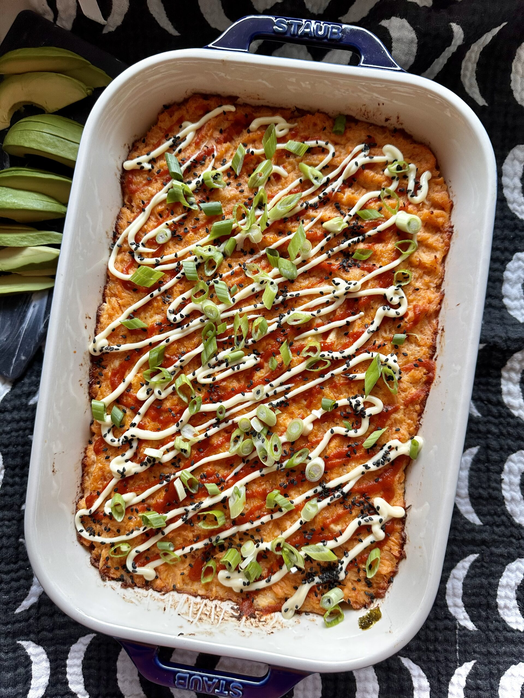

Sushi Bake

Description
I heard about this recipe from viral tiktoks and I had to try it. It's based off of multiple different versions. But mostly based off of @gaming_foodie (v1 | v2) and @dobochobo versions.
Out of all my recipes, this is the quickest and easiest to whip up and tailor it to your taste. Perfect for when you crave sushi but can't get it.
Ingredients
≥3 serving size- 3 (frozen) salmon fillets
- 4 imitation crab meat sticks
- 2oz of philadelphia (block) cream cheese
- ~1/4 cup of (Kewpie) mayo
- sriracha to taste
- 1/2tbsp or 1.5 cloves of minced garlic
- black pepper to taste
- sesame seeds
- crushed nori or furikake
- 3/4 cup of rice with 10oz of water
- 1tbsp of rice vinegar
- (seedless) cucumber
- avocado
- green onion
- soy sauce
- sesame oil
- sriracha mayo
- nori sheets in squares
Main
can use regular mayo too
Rice
Optional
Steps
- leave cream cheese block out to soften
- bake salmon based off of given directions
- using a fork, break up the baked salmon into small pieces into a bowl
- do the same for the imitation crab meat
- add the cream cheese, mayo, sriracha, garlic, and black pepper to the bowl and combine together
- cook rice and then mix in rice vinegar
- spread the rice evenly in a small pan
- put a layer of the furikake or crushed up nori sheets on top of the rice
- put the protein mix on top and spread evenly
- can put more of the mayo, sriracha, (or sriracha mayo), furikake/nori and sesame seeds on top
- bake for 10 minutes at 380deg F
- once cool, serve and enjoy as is or add any of the optional ingredients to make it even better!
if it has skin remove the skin after baking